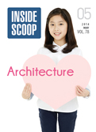

폴리 로고
주 메뉴
하위 메뉴
HOME > ENJOY POLY > INSIDESCOOP
최근 3개월 INSIDESCOOP 컨텐츠 보기
전체13건
INSIDESCOOP 컨텐츠 목록
-
VIEW PDF2014.08 VOL.81
Independence 자유를 위한 외침, 세계 여러나라의 독립 이야기
- From Campus to Campus감성 지능을 높여 잠재력을 이끌어냅니다 - 포항캠퍼스
- Campus Events시원한 아쿠아리움에서 바닷속 동물들과 친구가 되었어요 - 관악캠퍼스
- Campus Events우리가 직접 심은 고구마, 매주 돌보러 가요 - 대전/노은캠퍼스
- Student Creativity : Artwork나라를 위한 헌신, 감사합니다! 존경합니다!
-
2014.07 VOL.80
Independence 자유를 위한 외침, 세계 여러나라의 독립 이야기
- From Campus to Campus감성 지능을 높여 잠재력을 이끌어냅니다 - 포항캠퍼스
- Campus Events시원한 아쿠아리움에서 바닷속 동물들과 친구가 되었어요 - 관악캠퍼스
- Campus Events우리가 직접 심은 고구마, 매주 돌보러 가요 - 대전/노은캠퍼스
- Student Creativity : Artwork나라를 위한 헌신, 감사합니다! 존경합니다!
- Student Creativity : Artwork나라를 위한 헌신, 감사합니다! 존경합니다!
-
VIEW PDF2014.06 VOL.79
Independence 자유를 위한 외침, 세계 여러나라의 독립 이야기
- From Campus to Campus감성 지능을 높여 잠재력을 이끌어냅니다 - 포항캠퍼스
- Campus Events시원한 아쿠아리움에서 바닷속 동물들과 친구가 되었어요 - 관악캠퍼스
- Campus Events우리가 직접 심은 고구마, 매주 돌보러 가요 - 대전/노은캠퍼스
-
VIEW PDF2014.05 VOL.78
Independence 자유를 위한 외침, 세계 여러나라의 독립 이야기자유를 위한 외침, 세계 여러나라의 독립 이야기자유를 위한 외침
- From Campus to Campus감성 지능을 높여 잠재력을 이끌어냅니다 - 포항캠퍼스감성 지능을 높여 잠재력을 이끌어냅니다 - 포항캠퍼스감성 지능을 높여 잠재력을 이끌어냅니다 - 포항캠퍼스
- Campus Events시원한 아쿠아리움에서 바닷속 동물들과 친구가 되었어요 - 관악캠퍼스
- Campus Events우리가 직접 심은 고구마, 매주 돌보러 가요 - 대전/노은캠퍼스

하단내용